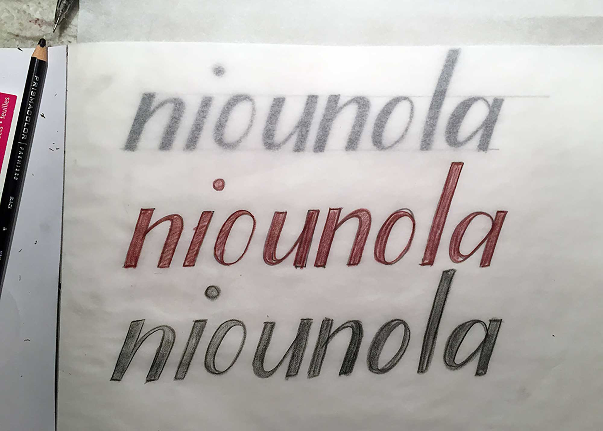
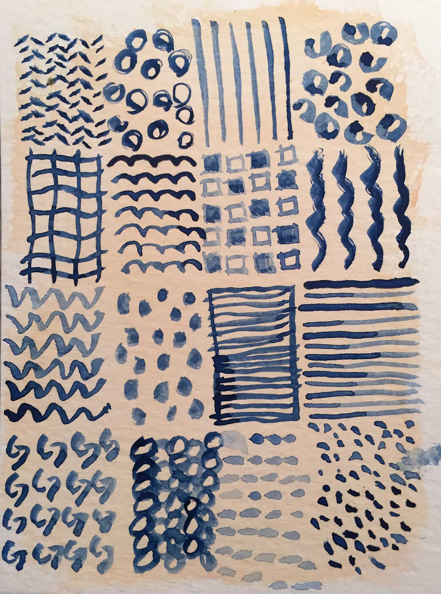
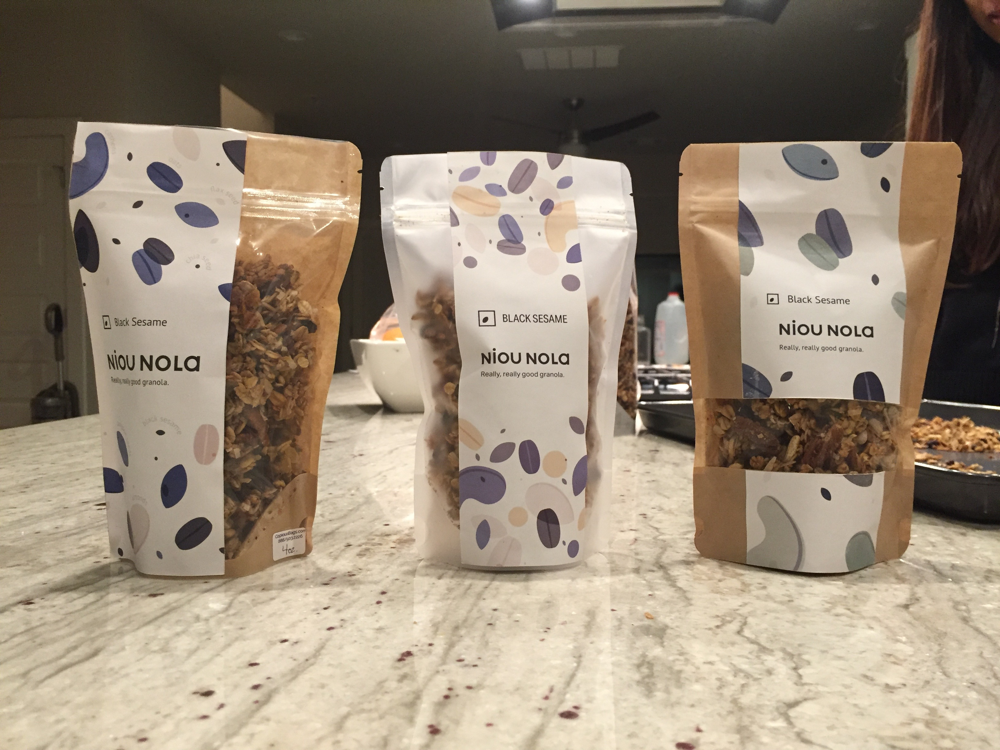
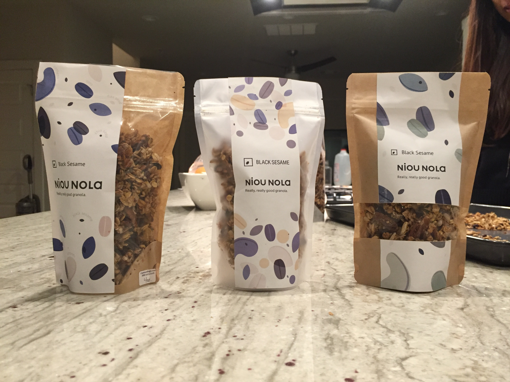

Role
Create simple brand and packaging for a granola baker.
Work
Niounola is the introductory brand to an emerging cafe venture. Niounola creates their granola is small batches and incorporates asian flavors and high-protein ingredients to create really, really good granola.
Brand Experience
Wholesome, fresh, and nourished

The brand needed to communicate wholesome, fresh, and nourishing. A moodboard was created to explore different directions and interpretations of the brand, drawing specifically on nature and produce, and japanese patterns and textiles.
Mark
The mark needed to build on these three brand attributes, and many directions were explored, from hand drawn script to geometric type faces, to find the right design.
Early iteratations, exploring more illustrative and organic directions.
Due to the repetition and roundness of the letterforms, finding just the right balance proved to be difficult. For the final mark, the decision was made to embrace these patterns and go for a geometric and round form. Below you can see how the initial inspirational design was refined to the final wordmark.
Pattern
To contrast with the strong geometry of the logo, and align with the spirit of Niounola, different illustrations and pattern work were explored in multiple mediums.

Through this exploration and some additional field research, however, it became clear that the pattern needed to relay back to the product. Therefore, illustrations of the ingredients, such as oats, nuts, and seeds were made.


This design was customized further for each flavor, showcasing the color and dominant ingredients in each type of granola. Currently, the flavors include Matcha, Chai, Black Sesame, and Red Bean.
Packaging
This product needed to have a packaging system that was flexible for both short term and long term vending. To allow for this, a sticker and stamp were developed. Below are some early sketches of possible layouts/designs for the packaging.

In addition to the sticker design, the material and composition of the package were considered. To determine the best packaging, mock ups of stickers were placed on the different packages and a portion of the target audience was surveyed.
 

Take Aways
falalalalal